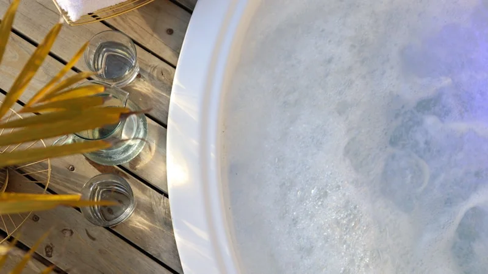

自律神経を整える正しい入浴法｜朝から疲れているあなたへ贈る、東洋医学と温活のセルフケア養生
2026.06.16

朝、スマートフォンのアラームが鳴り響いた瞬間から、体中にずっしりとした鉛のような重さを感じる…。十分な睡眠時間を取ったはずなのに、頭がすっきりとせず、ベッドから起き上がることさえ億劫になる…。このような、朝一番からすでに限界を迎えているような深い疲労感に悩まされてはいませんか？
日々のタスクに追われ、頭も体も常にフル回転している現代人にとって、自律神経の乱れは「なんとなくの不調」として現れ、やがて日常生活を蝕んでいきます。その不調、実は毎日の「お風呂の入り方」を少し見直すだけで、劇的に和らぐ可能性があるのです。本記事では、東洋医学と自律神経の専門家としての視点から、心と体を根本から解きほぐし、本来の「わたし」へと戻るための特別な入浴養生法を徹底的に解説します。
なぜ「お風呂に入っても」疲れが取れないのか？その原因とメカニズム
なぜ、これほどまでに疲れが取れないのでしょうか。その背景には、自律神経の「切り替え不全」と、東洋医学における「気・血・水」の滞りがあります。
私たちの体は、活動時に優位になる「交感神経」と、休息時に優位になる「副交感神経」が、天秤のようにバランスを取りながら働いています。しかし、日々のストレスや過度なパソコン・スマートフォンの使用、緊張状態が続くと、交感神経が過剰に興奮したままになり、夜になっても副交感神経へのスムーズな切り替えが行われなくなります。
交感神経が優位な状態では、全身の血管が収縮し、特に手足などの末梢血管への血流が著しく低下します。これにより、全身の細胞に十分な酸素や栄養が行き渡らなくなり、疲労物質や老廃物が体内に蓄積され続けます。これが、朝起きたときの「だるさ」や「慢性的な疲労感」の正体です。ただ熱いお湯に浸かるだけでは、交感神経をさらに刺激してしまい、逆効果になることも少なくありません。
さらに、東洋医学の観点から見ると、この状態はエネルギーの源である「気」の巡りが滞る「気滞（きたい）」、そしてそれに伴い血液（血：けつ）や水分（水：すい）が体内で行き詰まる状態と言えます。東洋医学において、「気」は温める力を持ち、巡ることで体を健康に保ちます。ストレスや緊張によって気が滞ると、体は冷え、内臓の働きが低下し、精神的にもイライラや不安を感じやすくなるのです。お風呂は単に体の汚れを落とす場所ではなく、この「気血水」を温め、再び巡らせるための「最大の養生（ようじょう）の場」なのです。
明日からできる！自律神経を整える入浴セルフケア3選
明日から、いえ今日からすぐに実践できる、自律神経を整えるための具体的な入浴・温活アクションを3つ厳選してご紹介します。
解決策①：自律神経を強制リセットする「39℃・15分の微温浴」
まず、お湯の温度管理から始めましょう。自律神経を整えるための最適な温度は38℃〜40℃、おすすめは「39℃」です。
【手順】
39℃に設定した湯船に、胸の下まで浸かる半身浴、または肩まで浸かる全身浴を「15分間」行います。最初の5分は静かに浸かり、残りの10分は腹式呼吸を意識しながら、ゆっくりと深呼吸を繰り返してください。お湯の温度が下がらないよう、風呂ふたを半分閉めておくのも効果的です。
【なぜ効くのか（根拠）】
42℃以上の熱いお湯は交感神経を急激に刺激し、血圧を上昇させ、体を興奮状態にしてしまいます。一方で、39℃のぬるめのお湯は、副交感神経のスイッチを優位にし、血管を優しく広げて深部体温をじんわりと上昇させます。入浴によって一度上がった深部体温は、お風呂上がりの90分後にかけてなだらかに下降していきます。この「深部体温の低下」こそが、脳に強力な睡眠シグナルを送り、深いノンレム睡眠（質の高い眠り）をもたらす医学的メカニズムなのです。
解決策②：入浴中に自律神経の興奮を鎮める「失眠（しつみん）」のツボ押し
湯船に浸かっている時間は、ツボ刺激による「経絡（けいらく）ケア」に最適なタイミングです。睡眠の質を高め、高ぶった神経を鎮める特効穴（ツボ）が「失眠」です。
【手順】
「失眠」は、足の裏、かかとの中央（ふくらみの中央部分）にあります。湯船の中で温まりながら、両手の親指を重ねて失眠のツボに当て、痛気持ちいいと感じる強さで「5秒かけてゆっくり押し、5秒かけてゆっくり離す」を5回繰り返します。お風呂の中で行うことで、皮膚が柔らかくなり刺激が伝わりやすくなります。
【なぜ効くのか（根拠）】
東洋医学において、失眠は「眠り失う」という名の通り、不眠や神経の高ぶりを解消するための重要なツボです。物理的刺激と湯船の温熱効果が相乗効果を生み、下半身に滞りがちな「気」を足元へと引き下げ、頭部に上った余分な熱（イライラや脳の興奮）を冷ます効果があります。これにより、入浴中のリラクゼーション効果が何倍にも高まります。
解決策③：湯上がりの冷えを防ぎ巡りをキープする「三陰交（さんいんこう）」マッサージ
お風呂から出た後、体が急速に冷めてしまっては、せっかく整った自律神経バランスが再び乱れてしまいます。湯上がりのケアが温活の成否を分けます。
【手順】
お風呂上がり、バスタオルで水分を拭き取った直後に、内くるぶしの最も高いところから指幅4本分上、すねの骨の後ろ側のキワにある「三陰交」をケアします。親指の腹を使い、骨のキワを押し込むように、3秒かけて押し、3秒かけて離すマッサージを左右それぞれ10回行います。
【なぜ効くのか（根拠）】
三陰交は、東洋医学において「肝（かん）」「脾（ひ）」「腎（じん）」という、血の貯蔵、消化吸収、水分代謝を司る3つの重要な経絡が交わる極めて重要なツボです。このツボを刺激することで、体全体の血流と水分の巡りが活性化し、湯冷めを強力に防ぎます。特に女性のホルモンバランスの乱れや冷え性に優れた効果を発揮し、夜間の自律神経を安定に導きます。
実践のヒント
入浴後の「三陰交」マッサージを行う際は、お気に入りのボディオイルやクリームを少量手に取り、肌の摩擦を減らしながら行うとより効果的です。また、マッサージ直後にシルクやオーガニックコットンの靴下を履くことで、高まった熱を体内に閉じ込め、朝まで冷えない体を作ることができます。
まとめとfucuuからの提案
いかがでしたでしょうか。ただなんとなくお風呂に浸かるのではなく、温度、時間、そしてツボという東洋医学の知恵を取り入れることで、入浴は単なる「入浴」から、あなたの心と体を本来の健やかさへと導く「極上のセルフケア」へと生まれ変わります。「朝起きた瞬間から疲れている」というその体からの悲鳴を無視せず、今夜から39℃のお湯と丁寧なツボ押しで、自分をいたわる時間を作ってみてください。
とはいえ、仕事や家事、育児に追われる毎日の中で、毎日完璧なセルフケアの時間を確保するのは難しいのが現実です。「今日はもう、ツボを押す気力さえ残っていない…」そんな日もありますよね。
そんな時は、自然の恵みの力を借りて、お風呂に入れるだけで本格的な「養生」が叶う、セルフケアブランド「fucuu (フクウ)」の生薬入浴剤を頼ってみてください。fucuuは、100%天然の生薬と無添加の国産アロマにこだわり、お湯に溶け出す植物のちからで、あなたの強張った心と体を優しく解きほぐします。香りを吸い込み、温かいお湯に身を委ねるだけで、自然と「わたしに戻る」時間が訪れ、じんわりと心満たされる幸福感（フクフク）を感じていただけるはずです。
忙しい毎日だからこそ、時にはアイテムに身を委ね、甘えることも立派なセルフケアです。今夜は少しだけ肩の荷を下ろして、温かいお湯の中で、あなただけの心地よい時間をお過ごしください。
fucuuの生薬入浴剤・国産アロマは、BASEオンラインショップでご購入いただけます。
BASEで購入する